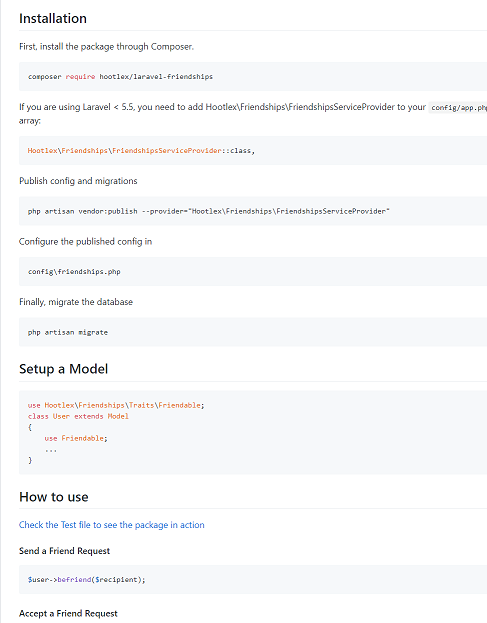
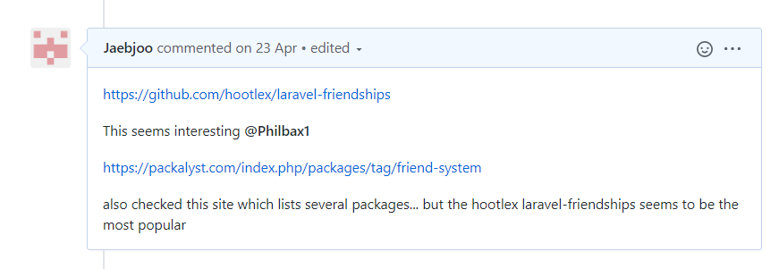

Once again just like Sprint 3 there was a choice to use an existing package to implement a friendship system to compliment the user model that we already had
AGILE principle 10 : Simplicity–the art of maximizing the amount of work not done–is essential
Initial installation involved the terminal command
composer require hootlex/laravel-friendships
The package creates a joining table between users which allows many to many relationships and statuses to be stored accordingly.
so if a record within the friendship table was 1 , 2 , 0 It would mean that User 1 had initiated a relationship with user 2 and it had a status of 0 which meant that it was pending.
There were also a collection of methods with the package, which allowed sending, accepting requests
example code..
Sending Request $user->befriend($recipient); Accepting Request $user->acceptFriendRequest($sender);
The user model was to be changed also
use Hootlex\Friendships\Traits\Friendable; class User extends Model { use Friendable; … }
$user->getAllFriendships();
$user->getPendingFriendships();
This would select the friendships and pending requests to be displayed in a table on the user page. Buttons would be added with POST actions so that information would be sent to the controller to be processed.
I ran into issues with not knowing what information was needed to be passed to the methods. However, I was able to learn this by reading the documentation on the github repository for the package.
Overall, I completed the friendship feature to be merged to the development and ultimately to the master branch. There was use of Timeboxing and Pair Programming agile techniques used to develop the feature as mentioned in the Personal achievements of sprint 4